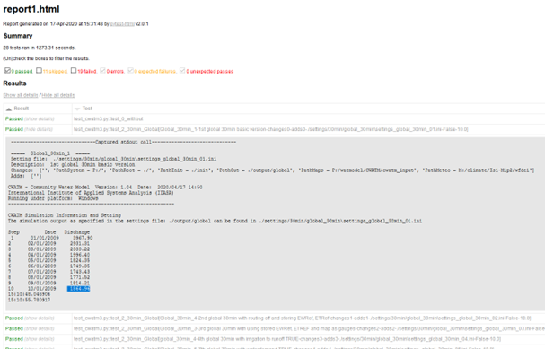

Testing Framework¶
Contents
CWatM has a pyTest suite, but it is different from others. We have some bigger dataset to run especially meteorological dataset and we want to be sure that CWatM is running with different resolutions, with diffrent projections, for diffrent regions, with diffrent sub-modules.
Note
Please have a look at the folder: pytest on our github: https://github.com/iiasa/CWatM
Purpose¶
A comprehensive pytest-based testing framework for the CWatM (Community Water Model) hydrological modeling system. This module provides automated testing capabilities for multiple model configurations, scenarios, and validation workflows including testing different settings files for different resolutions, different basins and different input and output options in order to make sure that CWatM is properly running after each change. | Folder: pytest | Program: test_cwatm3.py | Requirement: libraries pytest and pytest-html | Optional: pip install pytest-codecov
Note
Test Types and Execution Modes¶
The framework supports different test execution modes based on keywords in the settings file path:
“error”: Tests expected failure scenarios with quiet mode execution
“calibration”: Runs calibration workflow with meteorological data loading and warm-start functionality
“checkmap”: Validates model configuration without full execution - configuration validation only
Default mode: Performs standard model run with full execution and result validation
Configuration File Structure¶
The test configuration file uses a structured format to define test scenarios:
base_setting: Path to the base configuration template
name: Test scenario identifier and description
runtest: Enable/disable specific test groups (TRUE/FALSE)
test_value: Enable discharge value validation
path_*: System paths for different components (system, root, init, output, maps, meteo)
header: Test title for reporting
description: Detailed test description
set_save: Output filename for the generated settings file
changes: Parameter modifications in “parameter = value” format
adds: Additional configuration lines to append
last_value: Expected discharge value for validation
Testing Workflow¶
CWatM can be run with different resolutions, different basins, and different options. Each testing scenario uses a settings template and varies different options during the test. The framework follows this workflow: #. Parse command line arguments for settings file and CWatM executable paths #. Read and parse the test configuration file to extract test scenarios #. For each enabled test scenario:
Generate modified settings files with parameter changes
Execute CWatM with the appropriate test mode
Validate results based on test type
Record success/failure status
Generate comprehensive HTML test report with pytest
Code Quality and Standards¶
The test_cwatm3.py module has been enhanced with:
PEP 8 Compliance: Code formatted according to Python PEP 8 standards with 120-character line limit
Comprehensive Documentation: All functions documented using numpydoc format with detailed parameter descriptions
Preserved Functionality: All original variable names, function names, and comments maintained
Enhanced Readability: Improved code structure and formatting for better maintainability
Usage Examples¶
Basic execution with HTML reporting:
Note
pytest test_cwatm3.py –html=pytest_report_cwatm.html –settingsfile=__cwatm_pytests_settings.ini –cwatm=../run_cwatm.py
Extended execution with code coverage:
Note
pytest test_cwatm3.py –html=pytest_report_cwatm.html –cov=cwatm –cov-report=xml –settingsfile=__cwatm_pytests_settings.ini –cwatm=../run_cwatm.py
The framework provides robust validation for CWatM hydrological model testing across multiple scenarios, ensuring model reliability and consistency across different configurations and use cases.
Files and folders¶
output: Folder for CWatM testing results e.g. output/rhine
init: Folder for CWatM warm-start files
settings: Folder with settings templates and created settings files e.g. Settings/30min/global_30min/settings_global_30min.ini
metaNetcdf.xml: xml file with metadata for NetCDF files
test_cwatm3.py, conftest.py, pytest.ini: Program files
test_py_cwatm1.txt,.. Settings files
Testing CWatM¶
CWatM can be run with different resolutions, different basins, and different options. Each testing e.g. for the Rhine basin 30 arcmin is using a settings template and varies different options during the test. Examples for tests are given below, but other tests can be included. Tests are executed using the template settings file as a start and then tests are repeated using different options.
Results¶
Results of the testing are written into the report.html (–html=C:/work/CWATM/report1.html) This report shows an overview of passed, failed and skipped test and the details of each test.
{kind=link}

Figure 1: Screenshot of a test report page
Example of a pytesat settings file:
1# Tests for CWatM with pytest
2# ---------------------------
3
4[Introduction]
5# What to test?
6
7# 1 test mask
8# 1.1 mask as .tif
9# 1.2. mask as box
10# 1.3 mask as outlet lon/lat of a basin
11
12# 2 test gauges
13# 2.1 as list
14# 2.2 as map
15
16# 3 Options
17# 3.1 includeIrrigation = False
18# 3.2 preferentialFlow = False
19# 3.3 CapillarRise = False
20# 3.4 includeRunoffConcentration = True
21# 3.5 includeWaterBodies = True => 3.1 - 3.5 together
22# 3.6 includeWaterDemand = True
23# 3.7 calc_evaporation = True
24# - store OUT_MAP_Daily = ETRef, EWRef before!
25# 3.8 includeRouting = False
26# (some more calc_environflow = True, inflow = True, waterquality = True
27
28# 4 Timing
29# 4.1 more than 1 year
30# 4.2 with SpinUp
31# 4.3 save initital
32# 4.4 load initial
33
34# 5 outputs
35# 5.1 with tss output for daily, monthly, yearly
36# 5.2. with map output for daily, monthly, yearly
37# 5.3 with some 'exotic output
38
39[How_to_execute]
40# ------------------------------------------------------------------------------------
41# Execute
42# pytest test_cwatm3.py --html=C:/work/CWATM/report1.html --settingsfile=test_py_catwm2.txt --cwatm=C:/work/CWATM/run_cwatm.py
43
44[Tests]
45# True is the tests for this section should be done
46runtest: Rhine_30min True
47runtest: Rhine_30min_add False
48runtest: Error_30min False
49runtest: global_30min False
50runtest: Rhine_5min False
51runtest: Niger_5min False
52runtest: Ebro_Wastewater_5min False
53runtest: Otta_1km False
54runtest: Bhima_30sec False
55runtest: Burgenland_1km_modflow False
56runtest: UpperDanube_1min False
57runtest: Morava_1min False
58runtest: Tisa_1min False
59runtest: Calibration False
60runtest: Check_30min False
61
62# True is test should compare last discharge with given number, False is test should look for -no error- execution of run
63test_value: False
64
65[------------------------------------------------]
66#--------------------------------------------------------------------------------------
67# --------------------
68[30min_- Rhine]
69# ---------------------
70# 30 min versions
71 # Rhine
72 base_setting: ./settings/30min/rhine_30min/settings_rhine_30min.ini
73 name: Rhine_30min
74 path_system: P:
75 path_root: ./
76 path_init: ./init
77 path_out: ./output
78 path_maps: P:/watmodel/CWATM/cwatm_input_isimip3
79 path_meteo: P:/watxene/ISIMIP/ISIMIP3a/InputData/climate/obsclim_updated/GSWP3-W5E5
80
81 # 1st Rhine 30min
82 header: Rhine_30min_1
83 description: 1st Rhine 30min basic version
84 set_save: settings_rhine_30min_01.ini
85 changes:
86 adds:
87 last_value: 4.22
88 # 2nd setup Rhine
89 header: Rhine_30min_2
90 description: 2nd Rhine 30min with box as mask and basic outputs
91 set_save: settings_rhine_30min_02.ini
92 changes: MaskMap = 14 12 0.5 5.0 52.0
93 adds: OUT_TSS_Daily = discharge; OUT_MAP_Daily = discharge
94 last_value: 4.22
95 # 3rd setup Rhine
96 header: Rhine_30min_3
97 description: 3rd Rhine 30min with location as mask
98 set_save: settings_rhine_30min_03.ini
99 changes: MaskMap = 6.25 51.75
100 adds: OUT_TSS_Daily = discharge
101 last_value: 4.22
102 # 4th setup Rhine
103 header: Rhine_30min_4
104 description: 4th Rhine 30min with routing off and storing EWRef, ETRef
105 set_save: settings_rhine_30min_04.ini
106 changes: PET_modus = 3; includeRouting = False; StepEnd = 730
107 adds: OUT_MAP_Daily = ETRef, EWRef
108 last_value: 4.20
109 # 5h setup Rhine
110 header: Rhine_30min_5
111 description: 5th Rhine 30min with using stored EWRef, ETREF
112 set_save: settings_rhine_30min_05.ini
113 changes: calc_evaporation = False; StepEnd = 365; reportOldTss = True
114 adds: OUT_TSS_Daily = discharge
115 last_value: 4549.75
116 # 6h setup Rhine
117 header: Rhine_30min_6
118 description: 6th Rhine 30min using inflow
119 set_save: settings_rhine_30min_06.ini
120 changes: inflow = True; calc_evaporation = False; StepEnd = 40; In_Dir = $(FILE_PATHS:PathOut); InflowPoints = 11.25 49.75;QInTS = discharge_daily.tss
121 adds: OUT_TSS_Daily = discharge
122 last_value: 99999.99
123 # 7th setup Rhine
124 header: Rhine_30min_7
125 description: 7th Rhine 30min with irrigation to runoff TRUE
126 set_save: settings_rhine_30min_07.ini
127 changes: calc_evaporation = False; includeIrrigation = True; preferentialFlow = True; CapillarRise = True; includeRunoffConcentration = True; includeWaterBodies = True
128 adds: OUT_TSS_Daily = discharge; OUT_MAP_Daily = discharge
129 last_value: 16.62
130 # 8th setup Rhine
131 header: Rhine_30min_8
132 description: 8th Rhine 30min with waterdemand TRUE
133 set_save: settings_rhine_30min_08.ini
134 changes: calc_evaporation = False; includeIrrigation = True; preferentialFlow = True; CapillarRise = True; includeRunoffConcentration = True; includeWaterBodies = True; includeWaterDemand = True; StepEnd = 40
135 adds: OUT_TSS_Daily = discharge
136 last_value: 443.03
137 # 9th setup Rhine
138 header: Rhine_30min_9
139 description: 9th Rhine 30min waterdemand TRUE, SpinUp, and save initial
140 set_save: settings_rhine_30min_09.ini
141 changes: calc_evaporation = False; includeIrrigation = True; preferentialFlow = True; CapillarRise = True; includeRunoffConcentration = True; includeWaterBodies = True; includeWaterDemand = True; StepEnd = 366; SpinUp = 20/01/2000; save_initial = True; StepInit = 31/12/2000
142 adds: OUT_TSS_Daily = discharge
143 last_value: 1624.14
144 # 10th setup Rhine
145 header: Rhine_30min_10
146 description: 10th Rhine 30min waterdemand TRUE, load initial
147 set_save: settings_rhine_30min_10.ini
148 changes: calc_evaporation = False; includeIrrigation = True; preferentialFlow = True; CapillarRise = True; includeRunoffConcentration = True; includeWaterBodies = True; includeWaterDemand = True; StepEnd = 100; SpinUp = 30; load_initial = True; initLoad = $(FILE_PATHS:PathInit)/Rhine_20001231.nc
149 adds: OUT_TSS_Daily = discharge; OUT_MAP_TotalAvg = discharge, baseflow
150 last_value: 1553.59
151 # 11th setup Rhine
152 header: Rhine_30min_11
153 description: 11th Rhine 30min with lot of output
154 set_save: settings_rhine_30min_11.ini
155 changes: calc_evaporation = False; includeIrrigation = True; preferentialFlow = True; CapillarRise = True; includeRunoffConcentration = True; includeWaterBodies = True; includeWaterDemand = True; StepEnd = 730; SpinUp = 01/10/2000; load_initial = True; initLoad = $(FILE_PATHS:PathInit)/Rhine_20001231.nc; swAbstractionFrac = -0.7
156 adds: OUT_TSS_Daily = discharge; OUT_TSS_MonthAvg = discharge; OUT_TSS_AnnualAvg = discharge; OUT_TSS_AnnualTot = runoff; OUT_Map_Daily = discharge; OUT_Map_MonthAvg = discharge, Precipitation, runoff; OUT_Map_AnnualAvg = discharge; OUT_MAP_AnnualTot = runoff; OUT_MAP_AnnualEnd = runoff; OUT_MAP_TotalAvg = discharge, baseflow
157 last_value: 1656.99
158 # 12th setup Rhine
159 header: Rhine_30min_12
160 description: 12th Rhine 30min with more exotic output
161 set_save: settings_rhine_30min_12.ini
162 changes: calc_evaporation = False; includeIrrigation = True; preferentialFlow = True; CapillarRise = True; includeRunoffConcentration = True; includeWaterBodies = True; includeWaterDemand = True; StepEnd = 400; SpinUp = 20/01/2000; load_initial = True; initLoad = $(FILE_PATHS:PathInit)/Rhine_20001231.nc
163 adds: OUT_TSS_AreaSum_MonthTot = Precipitation, runoff; OUT_TSS_AreaAvg_MonthTot = Precipitation; OUT_Map_MonthAvg = reservoirStorage, Tavg; OUT_MAP_TotalTot = Precipitation
164 last_value: 1032.73
165
166
167[30min_- Rhine_additional]
168# -----------------------------
169 # Additional testing
170 base_setting: ./settings/30min/rhine_30min_add/settings_rhine_30min2.ini
171 name: Rhine_30min_add
172 path_system: P:
173 path_root: ./
174 path_init: ./init
175 path_out: ./output
176 path_maps: P:/watmodel/CWATM/cwatm_input_isimip3
177 path_meteo: P:/watxene/ISIMIP/ISIMIP3a/InputData/climate/obsclim_updated/GSWP3-W5E5
178
179 # 1st add
180 header: Rhine_30min_add_1
181 description: Additional tests 30min ETP 2
182 set_save: settings_rhineadd_30min_01.ini
183 changes: PET_modus = 2
184 adds:
185 last_value: 4.22
186 # 2rd add
187 header: Rhine_30min_add_2
188 description: Additional tests 30min ETP 3
189 set_save: settings_rhineadd_30min_02.ini
190 changes: PET_modus = 3
191 adds: co2conc = $(FILE_PATHS:PathMaps)/RCP_CO2/ssp126.nc4
192 last_value: 4.22
193 # 3th add
194 header: Rhine_30min_add_3
195 description: Additional tests 30min waterquality
196 set_save: settings_rhineadd_30min_03.ini
197 changes: waterquality = True
198 adds:
199 last_value: 4.22
200 # 4th add
201 header: Rhine_30min_add_4
202 description: Additional tests 30min environmental flow
203 set_save: settings_rhineadd_30min_04.ini
204 changes: calc_environflow = True; StepEnd = 31/12/2001; calc_ef_afterRun = True
205 adds: OUT_MAP_Daily = discharge; OUT_MAP_12month = MMF, MQ90, EF_VMF; OUT_MAP_Once = MAF, Q90
206 last_value: 4.22
207 # 5th add
208 header: Rhine_30min_add_5
209 description: Additional tests 30min add output
210 set_save: settings_rhineadd_30min_05.ini
211 changes: StepEnd = 40
212 adds: OUT_MAP_Daily = actualET[1]; OUT_TSS_monthend = discharge; OUT_TSS_totaltot = discharge; OUT_TSS_totalavg = discharge; OUT_MAP_monthend = discharge; OUT_MAP_monthtot = discharge;OUT_MAP_totaltot = discharge; OUT_MAP_totalavg = discharge; OUT_MAP_totalend = discharge
213 last_value: 4.22
214 # 6th add
215 header: Rhine_30min_add_6
216 description: Additional tests - store basin map
217 set_save: settings_rhineadd_30min_06.ini
218 changes: StepEnd = 4; savebasinmap = True
219 adds:
220 last_value: 4.22
221 # 7th add
222 header: Rhine_30min_add_7
223 description: Additional tests - load basin map stored before as .tif
224 set_save: settings_rhineadd_30min_07.ini
225 changes: StepEnd = 4; MaskMap = $(FILE_PATHS:PathOut)/basin.tif
226 adds:
227 last_value: 4.22
228
229[Check for Errors]
230# --- ERROR ------------------
231 # Error testing
232 base_setting: ./settings/30min/error_30min/settings_error_30min.ini
233 name: Error_30min
234 path_system: P:
235 path_root: ./
236 path_init: ./init
237 path_out: ./output
238 path_maps: P:/watmodel/CWATM/cwatm_input_isimip3
239 path_meteo: P:/watxene/ISIMIP/ISIMIP3a/InputData/climate/obsclim_updated/GSWP3-W5E5
240
241 # 1st Error 101
242 header: Error_30min_1
243 description: 1st failure 30min basic version - Error 101
244 set_save: settings_error_30min_01.ini
245 changes: Gauges = bad bad
246 adds:
247 last_value: Error 101 - Gauges in settings file xxx is not a coordinate
248 # 2nd Error 102
249 header: Error_30min_2
250 description: 2nd failure 30min basic version - Error 102
251 set_save: settings_error_30min_02.ini
252 changes: Gauges = 6.25 21.75
253 adds:
254 last_value: Error 102 - Gauges is outside mask map
255 # 3rd Error 201
256 header: Error_30min_3
257 description: 3rd failure 30min basic version - Error 201
258 set_save: settings_error_30min_03.ini
259 changes: MaskMap = bad30min.tif
260 adds:
261 last_value: Error 201 - File reading Error
262 # 4th Error 103
263 header: Error_30min_4
264 description: 4th failure 30min basic version - Error 103
265 set_save: settings_error_30min_04.ini
266 changes: MaskMap = 1 1 1 1 1 1
267 adds:
268 last_value: Error 103 - Maskmap is not a valid mask map nor valid coordinates nor valid point
269 # 5th Error 104
270 header: Error_30min_5
271 description: 5th failure 30min basic version - Error 104
272 set_save: settings_error_30min_05.ini
273 changes: MaskMap = 6.25 71.75
274 adds:
275 last_value: Error 104 - MaskMap point does not have a valid value in the river network (LDD)
276 # 6th Error 203
277 header: Error_30min_6
278 description: 6th failure 30min basic version - Error 203
279 set_save: settings_error_30min_06.ini
280 changes: Ldd = bad
281 adds:
282 last_value: Error 203 - Filename does not exists
283 # 7th Error 105
284 header: Error_30min_7
285 description: 7th failure 30min basic version - Error 105
286 set_save: settings_error_30min_07.ini
287 changes: CellArea = $(FILE_PATHS:PathMaps)/areamaps/lobith.tif
288 adds:
289 last_value: Error 105 - map has a different shape than area or ldd
290 # -> error 106 is missing data handling line 435
291 # -> error 204 is missing data handling line 510
292 # -> error 205 is missing data handling line 561
293 # -> error 206,207 is missing data handling line 610,633
294 # -> error 107,108 is missing data handling line 680,780
295 # 8th Error 208
296 header: Error_30min_8
297 description: 8th failure 30min basic version - Error 208
298 set_save: settings_error_30min_08.ini
299 changes: TavgMaps = $(FILE_PATHS:PathMeteo)/ttt*
300 adds:
301 last_value: Error 208 - File missing
302 # -> error 209 is missing data handling line 822
303 # -> error 210,211 is missing data handling line 915,920
304 # -> error 109 is missing data handling line 968
305 # 9th Error 212
306 header: Error_30min_9
307 description: 9th failure 30min basic version - Error 212
308 set_save: settings_error_30min_09.ini
309 changes: fractionLandcover = $(PathLandcover)/xxx.nc
310 adds:
311 last_value: Error 212 - File missing
312 # -> error 110 is missing data handling line 1102
313 # 10th Error 213
314 header: Error_30min_10
315 description: 10th failure 30min basic version - Error 213
316 set_save: settings_error_30min_10.ini
317 changes: relativeElevation = $(PathTopo)/xxx.nc
318 adds:
319 last_value: Error 213 - File missing
320 # -> error 111 is missing data handling line 1132
321 # 11st Error 214
322 header: Error_30min_11
323 description: 11st failure 30min basic version - Error 214
324 set_save: settings_error_30min_11.ini
325 changes: load_initial = True; initLoad = $(FILE_PATHS:PathInit)/xxx.nc
326 adds:
327 last_value: Error 214 - File missing
328 # -> error 112 is missing data handling line 1167
329 # -> error 113 is missing data handling line 1177
330 # -> error 114 is missing data handling line 1182
331 # 12nd Error 115
332 header: Error_30min_12
333 description: 12nd failure 30min basic version - Error 215
334 set_save: settings_error_30min_12.ini
335 changes: coverresult = FFFFF
336 adds:
337 last_value: Error 115 - Value is not True or False
338 # -> error 116 is missing data handling line 1644
339
340
341 # -----------------------------------------------
342
343 # -> error 118 is missing timestep line 67
344 # 13th Error 119
345 header: Error_30min_13
346 description: 13th failure 30min basic version - Error 119
347 set_save: settings_error_30min_13.ini
348 changes: StepStart = xxx
349 adds:
350 last_value: Error 119 - Either date in StepStart is not a date or in SpinUp or StepEnd it is neither a number or a date
351 # 14th Error 120
352 header: Error_30min_14
353 description: 14th failure 30min basic version - Error 120
354 set_save: settings_error_30min_14.ini
355 changes: save_initial = True; StepInit = xxx
356 adds:
357 last_value: Error 120 - First date in StepInit is neither a number or a date
358 # 15th Error 121
359 header: Error_30min_15
360 description: 15th failure 30min basic version - Error 121
361 set_save: settings_error_30min_15.ini
362 changes: save_initial = True; StepInit = 31/12/2009 kkk
363 adds:
364 last_value: Error 121 - Second value in StepInit is not a bumber or date nor indicating a repetition of year(y), month(m) or day(d)^
365 # 16th Error 122
366 header: Error_30min_16
367 description: 16th failure 30min basic version - Error 122
368 set_save: settings_error_30min_16.ini
369 changes: save_initial = True; StepInit = 31/12/2009 d kkk
370 adds:
371 last_value: Error 122 - Third value in StepInit is not an integer after (y) or (m) or (d)"
372 # -> error 215 is missing timestep line 281
373 # 17th Error 215
374 header: Error_30min_17
375 description: 17th failure 30min basic version - Error 215
376 set_save: settings_error_30min_17.ini
377 changes: PrecipitationMaps = $(FILE_PATHS:PathMeteo)/xxx*
378 adds:
379 last_value: Error 215 - Cannot find precipitation maps
380 # 18th Error 123
381 header: Error_30min_18
382 description: 18th failure 30min basic version - Error 123
383 set_save: settings_error_30min_18.ini
384 changes: StepStart = 1
385 adds:
386 last_value: Error 123 - StepStart has to be a valid date
387 # 19th Error 124
388 header: Error_30min_19
389 description: 19th failure 30min basic version - Error 124
390 set_save: settings_error_30min_19.ini
391 changes: StepEnd = 01/01/1999
392 adds:
393 last_value: Error 124 - Start or end date are wrong. End date is smaller than the first time step date
394 # 20th Error 125
395 header: Error_30min_20
396 description: 20th failure 30min basic version - Error 125
397 set_save: settings_error_30min_20.ini
398 changes: SpinUp = 1/01/1990
399 adds:
400 last_value: Error 125 - Spin date is wrong. Spin date is smaller/bigger than the first/last time step date
401
402 # ---------------- global -----------------------------
403 # -> error 301 is missing global line 177: Python version is not 64 bit
404
405 # --------------- data handling again ------------------------------
406
407 # 21st Error 117 #### -> error 117 is missing data handling line 1676
408 header: Error_30min_21
409 description: 21st failure 30min basic version - Error 117
410 set_save: settings_error_30min_21.ini
411 changes: inflow = True
412 adds:
413 last_value: Error 117 - No key with this name in Binding
414
415 # ---------------- inflow -----------------------------
416 # 22nd Error 216
417 header: Error_30min_22
418 description: 22rd failure 30min basic version - Error 216
419 set_save: settings_error_30min_22.ini
420 changes: inflow = True
421 adds: InLocal = True
422 last_value: Error 216 - Inflow file missing
423 # 23nd Error 127
424 header: Error_30min_23
425 description: 23nd failure 30min basic version - Error 127
426 set_save: settings_error_30min_23.ini
427 changes: inflow = True; InflowPoints = 8.25 49.75 7.75
428 adds: InLocal = True
429 last_value: Error 127 - Inflow coordinates are not pair
430 # -> error 217 is missing inflow line 131: inflow file mistake
431 # -> error 218 is missing inflow line 140: inflow file mistake
432
433 # ---------------- environflow -----------------------------
434 # 24th Error 128
435 header: Error_30min_24
436 description: 24th failure 30min basic version - Error 128
437 set_save: settings_error_30min_24.ini
438 changes: calc_environflow = True; calc_ef_afterRun = True
439 adds:
440 last_value: Error 128 - OUT_MAP_Daily = discharge may be not defined in [OUTPUT]
441 # -> error 219 is missing environ line 119: mistake in discharge daily netcdf file
442
443
444 # ---------------- output -----------------------------
445 # 26th Error 220
446 header: Error_30min_26
447 description: 26th failure 30min basic version - Error 220
448 set_save: settings_error_30min_26.ini
449 changes: OUT_Dir = ./xxxx
450 adds: OUT_TSS_Daily = discharge
451 last_value: Error 220 - Output directory is wrong
452 # 27th Error 221
453 header: Error_30min_27
454 description: 27th failure 30min basic version - Error 221
455 set_save: settings_error_30min_27.ini
456 changes: Gauges = bad
457 adds:
458 last_value: Error 221 - output-points file is wrong
459 # 28th Error 129
460 header: Error_30min_28
461 description: 28th failure 30min basic version - Error 129
462 set_save: settings_error_30min_28.ini
463 changes: Gauges = bad bad bad
464 adds:
465 last_value: Error 129 - output-points are not pairs of coordinate
466 # 29th Error 130
467 header: Error_30min_29
468 description: 29th failure 30min basic version - Error 130
469 set_save: settings_error_30min_29.ini
470 changes:
471 adds: OUT_TSS_Wrong = discharge
472 last_value: Error 130 - Out_TSS is not one of these - daily, monthend, monthtot, monthavg, annualend, annualtot, annualavg
473 # 30th Error 131
474 header: Error_30min_30
475 description: 30th failure 30min basic version - Error 131
476 set_save: settings_error_30min_30.ini
477 changes:
478 adds: OUT_TSS_AreaWrong_Daily = discharge
479 last_value: Error 131 - OUT_TSS_AreaWrong_Daily is not one of these - TSS for point value AreaSum for sum of area, AreaAvg for average of area
480 # 31st Error 132
481 header: Error_30min_31
482 description: 31st failure 30min basic version - Error 132
483 set_save: settings_error_30min_31.ini
484 changes:
485 adds: OUT_TSS_Daily = dischargeWrong
486 last_value: Error 132 - Variable is not defined in list of variables
487
488 # 32rd Error 400
489 header: Error_30min_32
490 description: 32nd failure - here not a failure but exit bc environmental flow calc from existing - Error 400
491 set_save: settings_error_30min_32.ini
492 changes: calc_environflow = True; StepEnd = 31/12/2010; calc_ef_afterRun = False; EFDis = $(FILE_PATHS:PathOut)/discharge_daily.nc
493 adds: OUT_MAP_12month = MMF, MQ90, EF_VMF
494 last_value: Error 400 - environmental flow calc from existing
495
496[30min_- Global]
497# -----------------------------
498 # Global
499 base_setting: ./settings/30min/global_30min/settings_global_30min.ini
500 name: global_30min
501 path_out: ./output
502
503 # 1st global 30min
504 header: Global_30min_1
505 description: 1st global 30min basic version
506 set_save: settings_global_30min_01.ini
507 changes:
508 adds:
509 last_value: 1864.96
510 # 2th setup global
511 header: Global_30min_4
512 description: 2nd global 30min with routing off and storing EWRef, ETRef
513 set_save: settings_global_30min_02.ini
514 changes: includeRouting = False; StepEnd = 400
515 adds: OUT_MAP_Daily = ETRef, EWRef
516 last_value: 5895.42
517 # 3h setup global
518 header: Global_30min_3
519 description: 3rd global 30min with using stored EWRef, ETREF and map as gauges
520 set_save: settings_global_30min_03.ini
521 changes: calc_evaporation = False; StepEnd = 40; Gauges = $(FILE_PATHS:PathMaps)/areamaps/station1263.map
522 adds: OUT_TSS_Daily = discharge
523 last_value: 178.63
524 # 4th setup global
525 header: global_30min_4
526 description: 4th global 30min with irrigation to runoff TRUE
527 set_save: settings_global_30min_04.ini
528 changes: calc_evaporation = False; includeIrrigation = True; preferentialFlow = True; CapillarRise = True; includeRunoffConcentration = True; includeWaterBodies = True
529 adds: OUT_TSS_Daily = discharge; OUT_MAP_Daily = discharge
530 last_value: 1555.02
531 # 5th setup global
532 header: Global_30min_5
533 description: 5th Global 30min with waterdemand TRUE
534 set_save: settings_global_30min_05.ini
535 changes: calc_evaporation = False; includeIrrigation = True; preferentialFlow = True; CapillarRise = True; includeRunoffConcentration = True; includeWaterBodies = True; includeWaterDemand = True; StepEnd = 40
536 adds: OUT_TSS_Daily = discharge
537 last_value: 3140.29
538 # 6th setup global
539 header: Global_30min_6
540 description: 6th Global 30min waterdemand TRUE, SpinUp, and save initial
541 set_save: settings_global_30min_06.ini
542 changes: calc_evaporation = False; includeIrrigation = True; preferentialFlow = True; CapillarRise = True; includeRunoffConcentration = True; includeWaterBodies = True; includeWaterDemand = True; StepEnd = 30; SpinUp = 15/01/2009; save_initial = True; StepInit = 20/01/2009
543 adds: OUT_TSS_Daily = discharge
544 last_value: 995.47
545 # 7th setup global
546 header: Global_30min_7
547 description: 7th Global 30min waterdemand TRUE, load initial
548 set_save: settings_global_30min_07.ini
549 changes: calc_evaporation = False; includeIrrigation = True; preferentialFlow = True; CapillarRise = True; includeRunoffConcentration = True; includeWaterBodies = True; includeWaterDemand = True; StepEnd = 100; SpinUp = 15; load_initial = True; initLoad = $(FILE_PATHS:PathInit)/global_20090120.nc
550 adds: OUT_TSS_Daily = discharge
551 last_value: 150228.10
552 # 8th setup global
553 header: Global_30min_8
554 description: 8th Global 30min with lot of output
555 set_save: settings_global_30min_08.ini
556 changes: calc_evaporation = False; includeIrrigation = True; preferentialFlow = True; CapillarRise = True; includeRunoffConcentration = True; includeWaterBodies = True; includeWaterDemand = True; StepEnd = 370; SpinUp = 15/01/2009; load_initial = True; initLoad = $(FILE_PATHS:PathInit)/global_20090120.nc
557 adds: OUT_TSS_Daily = discharge; OUT_TSS_MonthAvg = discharge; OUT_TSS_AnnualAvg = discharge; OUT_TSS_AnnualTot = runoff; OUT_Map_MonthAvg = discharge, Precipitation, runoff; OUT_Map_AnnualAvg = discharge; OUT_MAP_TotalAvg = discharge, baseflow
558 last_value: 93642.42
559
560# -----------------------------
561# -----------------------------
562[5min -_Rhine]
563# 5 min versions
564 # Rhine
565 base_setting: ./settings/5min/rhine_5min/settings_rhine_5min.ini
566 name: Rhine_5min
567 path_system: P:
568 path_root: P:/watmodel/CWATM/cwatm_input_5min
569 path_init: P:/watmodel/cwatmpublic/develop/pytest/init
570 path_out: P:/watmodel/cwatmpublic/develop/pytest/output
571 path_maps: P:/watmodel/CWATM/cwatm_input_5min/input5min
572 path_meteo: P:/watmodel/CWATM/cwatm_input_5min/meteo/meteo_mswx_global
573
574 # 1st Rhine 5min
575 header: Rhine_5min_1
576 description: 1st Rhine 5min basic version
577 set_save: settings_rhine_5min_01.ini
578 changes:
579 adds:
580 last_value: 6.23
581 # 2nd setup Rhine
582 header: Rhine_5min_2
583 description: 2nd Rhine 5min with box as mask and basic outputs
584 set_save: settings_rhine_5min_02.ini
585 changes: MaskMap = 77 68 0.0833333333333 5.41666666666 52.0
586 adds: OUT_TSS_Daily = discharge; OUT_MAP_Daily = discharge
587 last_value: 6.23
588 # 3rd setup Rhine
589 header: Rhine_5min_3
590 description: 3rd Rhine 5min with location as mask
591 set_save: settings_rhine_5min_03.ini
592 changes: MaskMap = 5.96 51.945
593 adds: OUT_TSS_Daily = discharge
594 last_value: 6.23
595 # 4th setup Rhine
596 header: Rhine_5min_4
597 description: 4th Rhine 5min with routing off and storing EWRef, ETRef
598 set_save: settings_rhine_5min_04.ini
599 changes: includeRouting = False; StepEnd = 400
600 adds: OUT_MAP_Daily = ETRef, EWRef
601 last_value: 5.83
602 # 5h setup Rhine
603 header: Rhine_5min_5
604 description: 5th Rhine 5min with using stored EWRef, ETREF
605 set_save: settings_rhine_5min_05.ini
606 changes: calc_evaporation = False
607 adds: UT_TSS_Daily = discharge
608 last_value: 6.23
609 # 6th setup Rhine
610 header: Rhine_5min_6
611 description: 6th Rhine 5min with irrigation to runoff TRUE and gauges as maps
612 set_save: settings_rhine_5min_06.ini
613 changes: calc_evaporation = False; Gauges= $(FILE_PATHS:PathMaps)/areamaps/rhine_station6.map; includeIrrigation = True; preferentialFlow = True; CapillarRise = True; includeRunoffConcentration = True; includeWaterBodies = True
614 adds: OUT_TSS_Daily = discharge; OUT_MAP_Daily = discharge
615 last_value: 14.36
616 # 7th setup Rhine
617 header: Rhine_5min_7
618 description: 7th Rhine 5min with waterdemand TRUE
619 set_save: settings_rhine_5min_07.ini
620 changes: calc_evaporation = False; includeIrrigation = True; preferentialFlow = True; CapillarRise = True; includeRunoffConcentration = True; includeWaterBodies = True; includeWaterDemand = True; StepEnd = 40
621 adds: OUT_TSS_Daily = discharge
622 last_value: 1627.78
623 # 8th setup Rhine
624 header: Rhine_5min_8
625 description: 8th Rhine 5min waterdemand TRUE, SpinUp, and save initial
626 set_save: settings_rhine_5min_08.ini
627 changes: calc_evaporation = False; includeIrrigation = True; preferentialFlow = True; CapillarRise = True; includeRunoffConcentration = True; includeWaterBodies = True; includeWaterDemand = True; StepEnd = 40; SpinUp = 20/01/1990; save_initial = True; StepInit = 31/01/1990
628 adds: OUT_TSS_Daily = discharge
629 last_value: 1627.78
630 # 9th setup Rhine
631 header: Rhine_5min_9
632 description: 9th Rhine 5min waterdemand TRUE, load initial
633 set_save: settings_rhine_5min_09.ini
634 changes: calc_evaporation = False; includeIrrigation = True; preferentialFlow = True; CapillarRise = True; includeRunoffConcentration = True; includeWaterBodies = True; includeWaterDemand = True; StepEnd = 40; SpinUp = 20/01/1990; load_initial = True; initLoad = $(FILE_PATHS:PathInit)/Global_19900131.nc
635 adds: OUT_TSS_Daily = discharge
636 last_value: 2895.04
637 # 10th setup Rhine
638 header: Rhine_5min_10
639 description: 10th Rhine 5min with lot of output
640 set_save: settings_rhine_5min_10.ini
641 changes: calc_evaporation = False; includeIrrigation = True; preferentialFlow = True; CapillarRise = True; includeRunoffConcentration = True; includeWaterBodies = True; includeWaterDemand = True; StepEnd = 400; SpinUp = 20/01/1990; load_initial = True; initLoad = $(FILE_PATHS:PathInit)/Global_19900131.nc
642 adds: OUT_TSS_Daily = discharge; OUT_TSS_MonthAvg = discharge; OUT_TSS_AnnualAvg = discharge; OUT_TSS_AnnualTot = runoff; OUT_Map_Daily = discharge; OUT_Map_MonthAvg = discharge, Precipitation, runoff; OUT_Map_AnnualAvg = discharge; OUT_MAP_TotalAvg = discharge, baseflow
643 last_value: 3045.40
644 # 11th setup Rhine
645 header: Rhine_5min_11
646 description: 11th Rhine 5min with more exotic output
647 set_save: settings_rhine_5min_11.ini
648 changes: calc_evaporation = False; includeIrrigation = True; preferentialFlow = True; CapillarRise = True; includeRunoffConcentration = True; includeWaterBodies = True; includeWaterDemand = True; StepEnd = 400; SpinUp = 20/01/1990; load_initial = True; initLoad = $(FILE_PATHS:PathInit)/Global_19900131.nc
649 adds: OUT_TSS_AreaSum_MonthTot = Precipitation, runoff; OUT_TSS_AreaAvg_MonthTot = Precipitation; OUT_Map_MonthAvg = reservoirStorage, Tavg; OUT_MAP_TotalTot = Precipitation
650 last_value: 3045.40
651 # 12th setup Rhine
652 header: Rhine_5min_12
653 description: 12th Rhine 5min with time period older than demand
654 set_save: settings_rhine_5min_12.ini
655 changes: StepStart = 01/01/2012; StepEnd = 4; SpinUp = None; includeIrrigation = True; preferentialFlow = True; CapillarRise = True; includeRunoffConcentration = True; includeWaterBodies = True; includeWaterDemand = True
656 adds:
657 last_value: 9999.9
658
659[5min -_Niger]
660# 5 min versions
661 # Niger - wetlands
662 base_setting: ./settings/5min/niger_5min/settings_niger_5min.ini
663 name: Niger_5min
664 path_system: P:
665 path_root: P:/watmodel/CWATM/Regions/Niger
666 path_out: ./output
667 path_init: P:/watmodel/CWATM/Regions/Niger/init
668 path_maps: P:/watmodel/CWATM/Regions/Niger/input
669 path_meteo: P:/watmodel/CWATM/Regions/Niger/meteo
670
671 # 1st Niger 5min
672 header: Niger_5min_1
673 description: 1st Niger 5min basic version
674 set_save: settings_niger_5min_01.ini
675 changes:
676 adds:
677 last_value: 6.23
678 # 2st Niger 5min
679 header: Niger_5min_1
680 description: 2nd Niger 5min with wetland
681 set_save: settings_niger_5min_02.ini
682 changes: reservoir_add_info_in_Excel = True; wetlands_variable_area = True
683 adds:
684 last_value: 6.23
685
686[Ebro_Wastewater_5min]
687# ---------------------
688# 5 min versions
689 # Ebro
690 base_setting: ./settings/5min/ebro_5min/settings_ebro5min_ebro_improved3_wwt.ini
691 name: Ebro_5min
692 path_system: P:
693 path_root: ./
694 path_init: ./init
695 path_out: ./output
696 path_maps: p:/watmodel/CWATM/cwatm_input_5min/input5min
697 path_maps2: p:/watproject/Accreu/casestudies/ebro/ebro_5min/inputs/wastewater
698 xl_settings: p:/watproject/Accreu/casestudies/ebro/ebro_5min/inputs/wastewater/cwatm_settings_9_wwt.xlsx
699 path_meteo: P:/watxene/ISIMIP/ISIMIP3a/InputData/climate/obsclim_updated/GSWP3-W5E5
700
701 # 1st Ebro 5min
702 header: Ebro_5min_1
703 description: 1st Ebro 5min basic version - with wastewater, command areas and sectorSourceAbstractionFractions
704 set_save: settings_Ebro_5min_01.ini
705 changes:
706 adds:
707 last_value: 75.92
708 # 2st Ebro 5min
709 header: Ebro_5min_2
710 description: 2st Ebro 5min basic version - without sectorSourceAbstractionFractions
711 set_save: settings_Ebro_5min_02.ini
712 changes: sectorSourceAbstractionFractions = False
713 adds:
714 last_value: 71.68
715 # 3st Ebro 5min
716 header: Ebro_5min_3
717 description: 3st Ebro 5min basic version - without commandAreas
718 set_save: settings_Ebro_5min_03.ini
719 changes: using_reservoir_command_areas = False
720 adds: buffer_waterbodies = 1
721 last_value: 63.49
722
723
724[1km - Otta]
725# -----------------------------
726# 1 km version - Glacier + Reservoir
727 # Norway Otta
728 base_setting: ./settings/1km/Otta/settings_otta_1km.ini
729 name: Otta_1km
730 path_system: P:/watmodel/CWATM/Regions/CWatM-Otta2
731 path_root: P:/watmodel/CWATM/Regions/CWatM-Otta2
732 path_init: P:/watmodel/CWATM/Regions/CWatM-Otta2/init
733 path_out: P:/watmodel/cwatmpublic/develop/pytest/output
734 path_maps: P:/watmodel/CWATM/Regions/CWatM-Otta2
735 path_meteo: P:/watmodel/CWATM/cwatm_input_1km_Norway/meteo_senorge
736
737 # 1st Norway Otta 1km
738 header: Norway_Otta_1km_1
739 description: 1st Norway Otta - without release
740 set_save: settings_otta_1km_01.ini
741 changes:
742 adds: OUT_Map_Daily = discharge
743 last_value: 0.0
744 # 2st Norway Otta 1km
745 header: Norway_Otta_1km_1
746 description: 2st Norway Otta - with release, with transfer
747 set_save: settings_otta_1km_02.ini
748 changes: reservoir_add_info_in_Excel = True; reservoir_transfers = True; reservoir_releases_in_Excel_settings = True
749 adds: OUT_Map_Daily = discharge
750 last_value: 0.0
751 # 3st Norway Otta 1km
752 header: Norway_Otta_1km_1
753 description: 3st Norway Otta - with release, with transfer, additional output
754 set_save: settings_otta_1km_02.ini
755 changes: reservoir_add_info_in_Excel = True; reservoir_transfers = True; reservoir_releases_in_Excel_settings = True
756 adds: OUT_TSS_Daily = discharge, reservoir_transfers_out_M3; OUT_MAP_Daily = Rain, Snow, IceMelt, SnowMelt, snowEvap, iceEvap, act_nonpaddyConsumption, act_paddyConsumption, act_livConsumption, returnflowIrr, returnflowNonIrr, GW_Irrigation, Res_Irrigation, Lake_Irrigation, Channel_Irrigation, GW_Industry, GW_Livestock, GW_Domestic, Res_Industry, Res_Livestock, Res_Domestic, Lake_Industry, Lake_Livestock, Lake_Domestic, Channel_Domestic, Channel_Livestock, Channel_Industry, prefFlow_GW, perc3toGW_GW, lakeResInflowM, lakeResOutflowM, act_indConsumption, act_domConsumption, act_livConsumption, act_irrWithdrawal, act_nonIrrWithdrawal, act_domWithdrawal, act_indWithdrawal, act_livWithdrawal, snowEvap, capillar, baseflow, actTransTotal_forest, actTransTotal_grasslands, actTransTotal_paddy, actTransTotal_nonpaddy, unmet_lost, unmetDemand, pot_GroundwaterAbstract, storGroundwater, discharge, nonFossilGroundwaterAbs, Precipitation, totalET, EvapoChannel, EvapWaterBodyM, act_nonIrrConsumption, channelStorage, lakeResStorage, totalSto, sum_actTransTotal, sum_actBareSoilEvap, sum_interceptEvap, sum_openWaterEvap, addtoevapotrans, lakeResInflowM, act_bigLakeResAbst, sum_gwRecharge, sum_capRiseFromGW, act_totalIrrConsumption, sum_runoff, returnFlow, act_SurfaceWaterAbstract, dis_outlet, act_irrNonpaddyWithdrawal, GlacierMelt, GlacierRain
757 last_value: 0.0
758
759
760
761[30sec - Bhima]
762# -----------------------------
763# 30 arcsecond version - Groundwater modelflow
764 # Bhima
765 base_setting: ./settings/1km/Bhima/settings_bhima.ini
766 name: Bhima_30sec
767 path_system: P:/watmodel/CWATM/upper_bhima/FUSE
768 path_root: P:/watmodel/CWATM/upper_bhima/FUSE
769 path_init: P:/watmodel/CWATM/upper_bhima/FUSE/Input/init
770 path_out: P:/watmodel/cwatmpublic/develop/pytest/output/bhima
771 path_maps: P:/watmodel/CWATM/upper_bhima/FUSE/Input
772 path_meteo: P:/watmodel/CWATM/upper_bhima/FUSE/Input/meteo/010deg
773 # 1st Bhima 30 arcseconds
774 header: Bhima_30sec_1
775 description: 1st Bhima - without groundwater and crop
776 set_save: settings_Bhima_01.ini
777 changes: modflow_coupling = False; includeCrops = False
778 adds:
779 last_value: 0.0
780 # 3th Bhima 30 arcseconds
781 header: Bhima_30sec_3
782 description: 3rd Bhima - with Groundwater and with crop specific data
783 set_save: settings_Bhima_03.ini
784 changes: StepEnd = 10/07/2013
785 adds: OUT_MAP_TotalEnd = frac_totalnonIrr_max, canals, irrWithdrawalSW_max, irrWithdrawalGW_max, resVolume, gwdepth_adjuster, reservoir_command_areas, gwdepth_adjuster, domestic_agent_SW_request_month_m3, domestic_agent_GW_request_month_m3, irrigatedArea_original, reservoir_command_areas, resYear, gwdepth_difference_sim_obs, permeability, relaxGWagent, waterBodyTyp, adminSegments, waterBodyID, cellArea, modflowtotalSoilThickness, GeneralCrop_Irr, GeneralCrop_nonIrr, modflow_watertable, SugarAdsali_Irr; OUT_Map_MonthTot = PumpingM3_daily, abstractedLakeReservoirM3, ETRefAverage_segments, precipEffectiveAverage_segments, lakeResInflowM, act_bigLakeResAbst, lakeResOutflowM, EvapWaterBodyM, leakage
786 last_value: 0.0
787 # 4th Bhima 30 arcseconds
788 header: Bhima_30sec_4
789 description: 4th Bhima - with complex Groundwater and with crop specific data
790 set_save: settings_Bhima_04.ini
791 changes: activate_irrigation_agents = True; relax_irrigation_agents = True; use_complex_solver_for_modflow = True;
792 adds:
793 last_value: 0.0
794 # 2nd Bhima 30 arcseconds
795 header: Bhima_30sec_2
796 description: 2nd Bhima - meteo interpolation methos is Kron instead spline
797 set_save: settings_Bhima_02.ini
798 changes: modflow_coupling = False; includeCrops = False; InterpolationMethod = kron
799 adds:
800 last_value: 0.0
801[1km -Burgenland]
802# -----------------------------
803# 1km min version - Groundwater modelflow
804 # Burgenland
805 base_setting: ./settings/1km/Burgenland/settings_burgenland.ini
806 name: Burgenland_1km_modflow
807 path_root: P:/watmodel/CWATM/cwatm_input_1km_burgenland
808 path_out: P:/watmodel/cwatmpublic/develop/pytest/output/burgen
809 path_init: P:/watmodel/cwatmpublic/develop/pytest/init
810 path_maps: P:/watmodel/CWATM/cwatm_input_1km_burgenland
811 path_meteo: $(PathMaps)/meteo3
812
813 # 1st Burgenland 1km
814 header: Burgenland_1km_1
815 description: 1st Burgenland - without Groundwater and without crop specific data
816 set_save: settings_burgenland_01.ini
817 changes: modflow_coupling = False; includeCrops = False
818 adds:
819 last_value: 0.0
820 # 2nd setup Burgenland 1km crop
821 header: Burgenland_1km_2_crop
822 description: 2nd Burgenland with crop specifi
823 set_save: settings_burgenland_02.ini
824 changes: modflow_coupling = False; save_initial = True; StepInit = 10/01/1990
825 adds: OUT_Map_Daily = discharge
826 last_value: 0.0
827 # 3rd setup setup Burgenland 1km crop gw
828 header: Burgenland_1km_3_gw_crop
829 description: 3rd Burgenland 1km with crop and groundwater
830 set_save: settings_burgenland_03.ini
831 changes: StepEnd = 5; verbose_GW = True; writeModflowError = True
832 adds: OUT_Map_TotalEnd = modflow_watertable
833 last_value: 0.0
834
835[1arcmin - Danube, Upper, Morava, Tisa]
836# -----------------------------
837# 1 arcmin version - Glacier
838 # Upper Danube
839 base_setting: ./settings/1min/UpperDanube/settings_upper_1min.ini
840 name: UpperDanube_1min
841 path_system: P:/watmodel/CWATM/Regions/Danube_1min/Upper
842 path_root: P:/watmodel/CWATM/Regions/Danube_1min/Upper
843 path_init: P:/watmodel/CWATM/Regions/Danube_1min/Upper/init
844 path_out: P:/watmodel/cwatmpublic/develop/pytest/output
845 path_maps: P:/watmodel/CWATM/Regions/Danube_1min/Upper/input
846 path_meteo: P:/watmodel/CWATM/Regions/Danube_1min/Upper/meteo/emo-1
847
848 # 1st Upper Danube 1 arcmin
849 header: Upper_Danube_1min_1
850 description: 1st Upper Danube - with glacier
851 set_save: settings_upper_1min_01.ini
852 changes:
853 adds: OUT_Map_Daily = discharge
854 last_value: 0.0
855 # 2st Upper Danube 1 arcmin
856 header: Upper_Danube_1min_2
857 description: 2nd Upper Danube - with snow radiation and laspse rate map
858 set_save: settings_upper_1min_02.ini
859 changes: snowmelt_radiation = True; LapseRateVariable = True
860 adds: OUT_Map_Daily = discharge
861 last_value: 0.0
862 # 3st Upper Danube 1 arcmin
863 header: Upper_Danube_1min_3
864 description: 3rd Upper Danube - - with reservoir transfer
865 set_save: settings_upper_1min_03.ini
866 changes: reservoir_add_info_in_Excel = True; reservoir_transfers = True
867 adds: OUT_Map_Daily = discharge
868 last_value: 0.0
869 # 4st Upper Danube 1 arcmin
870 header: Upper_Danube_1min_4
871 description: 4th Upper Danube - - with smaller mask and missing reservoir transfer
872 set_save: settings_upper_1min_04.ini
873 changes: MaskMap = 10.0952 47.9596; Gauges = 10.0952 47.9596; reservoir_add_info_in_Excel = True; reservoir_transfers = True
874 adds: OUT_Map_Daily = discharge
875 last_value: 0.0
876
877
878# -----------------------------
879# 1 arcmin version - Reservoirs
880 # Danube Morava
881 base_setting: ./settings/1min/Morava/settings_morava_1min.ini
882 name: Morava_1min
883 path_system: P:/watmodel/CWATM/Regions/Danube_1min/Morava
884 path_root: P:/watmodel/CWATM/Regions/Danube_1min/Morava
885 path_init: P:/watmodel/CWATM/Regions/Danube_1min/Morava/init
886 path_out: P:/watmodel/cwatmpublic/develop/pytest/output
887 path_maps: P:/watmodel/CWATM/Regions/Danube_1min/Morava/input
888 path_meteo: P:/watmodel/CWATM/Regions/Danube_1min/Morava/meteo/emo-1
889
890 # 1st Danube Morava 1 arcmin
891 header: Danube_Morava_1min_1
892 description: 1st Danube Morava - without additional reservoirs
893 set_save: settings_morava_1min_01.ini
894 changes:
895 adds: OUT_Map_Daily = discharge
896 last_value: 0.0
897 # 2st Danube Morava 1 arcmin
898 header: Danube_Morava_1min_2
899 description: 2nd Danube Morava - with additional reservoirs
900 set_save: settings_morava_1min_02.ini
901 changes: reservoir_add_info_in_Excel = True; reservoir_releases_in_Excel_settings = True
902 adds: OUT_Map_Daily = discharge
903 last_value: 0.0
904 # 3st Danube Morava 1 arcmin
905 header: Danube_Morava_1min_3
906 description: 3rd Danube Morava - with ET method 1
907 set_save: settings_morava_1min_03.ini
908 changes: PET_modus = 1; includeRouting = False; StepEnd = 10; calc_evaporation = True
909 adds: OUT_MAP_Daily = ETRef, EWRef
910 last_value: 0.0
911 # 4th Danube Morava 1 arcmin
912 header: Danube_Morava_1min_4
913 description: 4th Danube Morava - with ET method 2
914 set_save: settings_morava_1min_04.ini
915 changes: PET_modus = 2; includeRouting = False; StepEnd = 10; calc_evaporation = True
916 adds: OUT_MAP_Daily = ETRef, EWRef
917 last_value: 0.0
918 # 5th Danube Morava 1 arcmin
919 header: Danube_Morava_1min_5
920 description: 5th Danube Morava - with ET method 3
921 set_save: settings_morava_1min_05.ini
922 changes: PET_modus = 3; includeRouting = False; StepEnd = 10; calc_evaporation = True
923 adds: OUT_MAP_Daily = ETRef, EWRef
924 last_value: 0.0
925 # 6th Danube Morava 1 arcmin
926 header: Danube_Morava_1min_6
927 description: 6th Danube Morava - with ET method 4
928 set_save: settings_morava_1min_06.ini
929 changes: PET_modus = 4; includeRouting = False; StepEnd = 10; calc_evaporation = True
930 adds: OUT_MAP_Daily = ETRef, EWRef
931 last_value: 0.0
932 # 7th Danube Morava 1 arcmin
933 header: Danube_Morava_1min_7
934 description: 7th Danube Morava - with ET method 5
935 set_save: settings_morava_1min_07.ini
936 changes: PET_modus = 5; includeRouting = False; StepEnd = 10; calc_evaporation = True
937 adds: OUT_MAP_Daily = ETRef, EWRef
938 last_value: 0.0
939# -----------------------------
940# 1 arcmin version - Water transfer
941 # Danube Tisa
942 base_setting: ./settings/1min/Tisa/settings_tisa_1min.ini
943 name: Tisa_1min
944 path_system: P:/watmodel/CWATM/Regions/Danube_1min/Tisa
945 path_root: P:/watmodel/CWATM/Regions/Danube_1min/Tisa
946 path_init: P:/watmodel/CWATM/Regions/Danube_1min/Tisa/init
947 path_out: P:/watmodel/cwatmpublic/develop/pytest/output
948 path_maps: P:/watmodel/CWATM/Regions/Danube_1min/Tisa/input
949 path_meteo: P:/watmodel/CWATM/Regions/Danube_1min/Tisa/meteo/emo-1
950
951 # 1st Danube Tisa 1 arcmin
952 header: Danube_Tisa_1min_1
953 description: 1st Danube Tisa - without additional reservoirs
954 set_save: settings_tisa_1min_01.ini
955 changes:
956 adds: OUT_Map_Daily = discharge
957 last_value: 0.0
958 # 2st Danube Morava 1 arcmin
959 header: Danube_Tisa_1min_2
960 description: 2st Danube Tisa - with additional reservoirs and water transfer
961 set_save: settings_tisa_1min_02.ini
962 changes: reservoir_add_info_in_Excel = True; reservoir_transfers = True
963 adds: OUT_Map_Daily = discharge
964 last_value: 0.0
965
966[Calibration]
967# -----------------------------
968# 1 arcmin version - Reservoirs
969 # Danube Morava
970 base_setting: ./settings/1min/Morava/settings_calibration_1min.ini
971 name: Morava_1min
972 path_system: P:/watmodel/CWATM/Regions/Danube_1min/Morava
973 path_root: P:/watmodel/CWATM/Regions/Danube_1min/Morava
974 path_init: P:/watmodel/CWATM/Regions/Danube_1min/Morava/init
975 path_out: P:/watmodel/cwatmpublic/develop/pytest/output
976 path_maps: P:/watmodel/CWATM/Regions/Danube_1min/Morava/input
977 path_meteo: P:/watmodel/CWATM/Regions/Danube_1min/Morava/meteo/emo-1
978
979 # 1st Calibration Morava 1 arcmin
980 header: Calibration_Morava_1min_1
981 description: 1st Calibration Test Morava
982 set_save: settings_calibration_1min_01.ini
983 changes:
984 adds: OUT_TSS_Daily = discharge
985 last_value: 0.0
986
987
988[Checkmap]
989# ------- CHECK ----------------------
990 # Check testing
991 base_setting: ./settings/30min/rhine_30min/settings_rhine_30min.ini
992 name: Check_30min
993 path_system: P:
994 path_root: ./
995 path_init: P:/watmodel/cwatmpublic/develop/init
996 path_out: P:/watmodel/cwatmpublic/develop/pytest/output
997 path_maps: P:/watmodel/CWATM/cwatm_input_isimip3
998 path_meteo: P:/watxene/ISIMIP/ISIMIP3a/InputData/climate/obsclim_updated/GSWP3-W5E5
999
1000 # 1st Check
1001 header: Check_30min_1
1002 description: Check data 30min basic version
1003 set_save: settings_checkmap_30min_01.ini
1004 changes:
1005 adds:
1006 last_value: 4.22